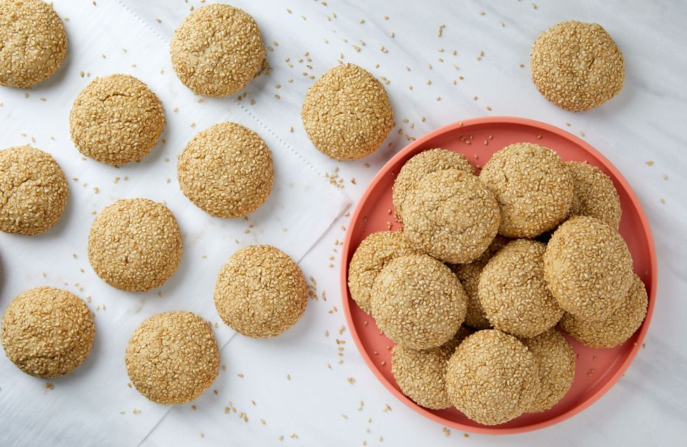

TAHANI COOKIES
Prep time: 45 mins
Yield: 18
Ingredients
Steps
- Preheat oven to 350° and line 2 two baking sheets with parchment. In a medium bowl, whisk together flour, baking powder, baking soda, and salt.
- Roll about 2 tablespoons of dough into a ball, then roll in sesame seeds and place on prepared baking sheets 2” apart. Dough will be soft, but shouldn’t stick to your hands.
- Let cool on baking sheet for 5 minutes, then move to a cooling rack to cool completely.